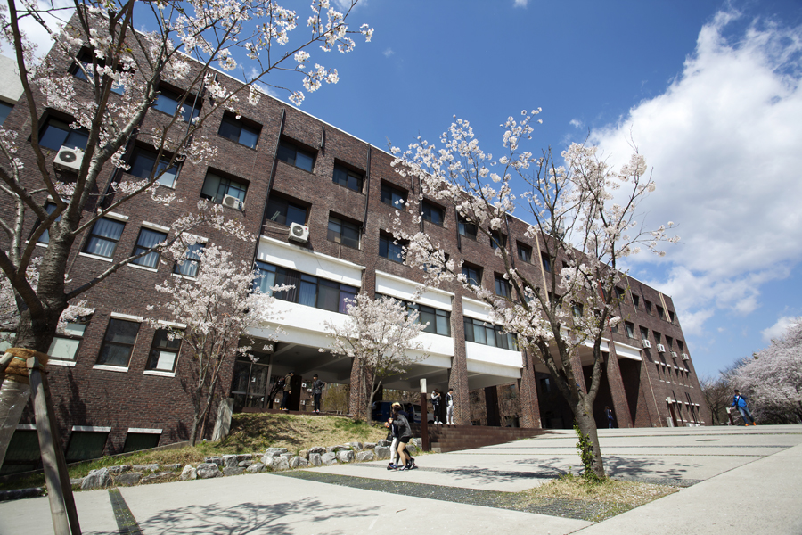

공학관

건물소개
공학관 건물 설명입니다.
공과대 건물로 지어졌다. 남쪽 벽의 담쟁이넝쿨이 아름답다. 1985년 토목공학과 신설이 공과대학의 효시이다.
층수소개
건물 층수 소개입니다.
1F :
토목공학과
, 토목공학과 실습실, 교수연구실
2F :
소방방재학과
소방방재학과 실습실, 소방방재학과 연구실, 교수연구실
3F :
건설안전방재공학과
, 물리치료학과 실습실, 건설안전방재공하고가 실습실, 교수연구실
4F :
환경공학과
, 환경공학과 실습실, 교수연구실
5F :
건축공학과
,
건축학과
,공대행정실, 건축공학과 실습실, 건축학과 실습실, 교수연구실
6F : 건축학과 실습실, 식품영양학과 실습실, 교수연구실